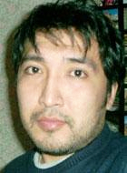

ПОЧЕМУ ВЫ НЕРВНО РЕАГИРУЕТЕ, КОГДА ДРУГИЕ ПРЕДЛАГАЮТ ВАМ ПОМИРИТЬСЯ?

... Я не мог не ответить. Такая волна ненависти, злобы на наше
Обращение меня сильно обескуражила, откровенно говоря.
Хочу еще раз повторить, наше послание-обращение было абсолютно спонтанным и искренним, это не чья та идея из какого-то проекта, и уж тем более не чьей-то заказ, и не желание пропиариться за счет собственного мнения, как некоторые тут считают. И мы не занимаем чью-либо сторону в этом конфликте. Это желание помочь вам поговорить между собой без обвинений, без претензий, а завтрашнем дне, о мире.
Для Афета. Это не пустая болтовня. Это гражданская позиция более сорока людей.
К вашему сведению, сбор подписей был абсолютно на добровольных началах. Те, кто подписал, искренне переживают за мир в вашем регионе. У многих из них есть друзья, родные по все стороны конфликта, который тлеет в вашем регионе. Если вам все равно поддерживают вас или нет, то просто НЕ читайте это обращение. Это точно не к вам обращено.
Для Индиры. Никто не говорит в нашем обращении про количество жертв войны, разве там написано или сказано про это? Почему передергивайте факты? Если у вас в Абхазии так развит гражданский сектор, то почему кроме Багапша никого больше не слышно из Абхазии?
Для Асиды. У меня есть друзья осетины в Южной и Северной Осетии в отличие от вас они как-то адекватно отреагировали на наше послание. Потом, знаете, нельзя бесконечно жить в ненависти друг к другу. Нельзя любые договоренности начинать со споров, я понимаю, что многие призывали к миру за эти годы, понимаю, что у каждого свое мнение, но где-то должны быть точки соприкосновения, так не бывает, чтобы их не было. Понимаю, война, нервы сдают, я был в Абхазии и очень хорошо знаком с вашей ситуацией. Понимаю тяжело. Но надо договориться, надо жить в мире, нельзя все время надеется на Россию и США, что они придут и разберутся, вот разобрались ...
Знаете, скажу откровенно, примерно такая же немного нервная реакция некоторых грузинских журналистов и НПО на наше послание на другом сайте, там нас обвиняли, что мы чуть ли не посягаемся на территориальную целостность Грузии и так далее. Здесь тон и содержание комментариев такой же. Для меня это стало откровением, и тысячу раз права Нателла Акаба, когда говорит, что гражданское общество находится в плену той же самой идеологии, что и власти. Вот, некоторые комментарии и там и здесь четко отражают, что гражданские организации не предлагают альтернативы, не хотят этого, им удобно находится в нише государственной идеологии. Хотя на Кавказе больше всего всяких НПО, где в названии обязательно присутствует слово «мир». Почему же вы молчите? Почему вы нервно реагируете, если другие предлагают вам помириться? Поговорить, без претензий, без обвинений. Если ваши правительства, политики не могут договорится, вы должны это сделать, если вы такие развитые, как говорит Индира, нельзя все время жить в страхе, и ждать когда вас разбомбят, потому что на примере всех конфликтов на Кавказе видно, что никто не застрахован от войны.
Алмаз Калет
23-08-08
Хочу еще раз повторить, наше послание-обращение было абсолютно спонтанным и искренним, это не чья та идея из какого-то проекта, и уж тем более не чьей-то заказ, и не желание пропиариться за счет собственного мнения, как некоторые тут считают. И мы не занимаем чью-либо сторону в этом конфликте. Это желание помочь вам поговорить между собой без обвинений, без претензий, а завтрашнем дне, о мире.
Для Афета. Это не пустая болтовня. Это гражданская позиция более сорока людей.
К вашему сведению, сбор подписей был абсолютно на добровольных началах. Те, кто подписал, искренне переживают за мир в вашем регионе. У многих из них есть друзья, родные по все стороны конфликта, который тлеет в вашем регионе. Если вам все равно поддерживают вас или нет, то просто НЕ читайте это обращение. Это точно не к вам обращено.
Для Индиры. Никто не говорит в нашем обращении про количество жертв войны, разве там написано или сказано про это? Почему передергивайте факты? Если у вас в Абхазии так развит гражданский сектор, то почему кроме Багапша никого больше не слышно из Абхазии?
Для Асиды. У меня есть друзья осетины в Южной и Северной Осетии в отличие от вас они как-то адекватно отреагировали на наше послание. Потом, знаете, нельзя бесконечно жить в ненависти друг к другу. Нельзя любые договоренности начинать со споров, я понимаю, что многие призывали к миру за эти годы, понимаю, что у каждого свое мнение, но где-то должны быть точки соприкосновения, так не бывает, чтобы их не было. Понимаю, война, нервы сдают, я был в Абхазии и очень хорошо знаком с вашей ситуацией. Понимаю тяжело. Но надо договориться, надо жить в мире, нельзя все время надеется на Россию и США, что они придут и разберутся, вот разобрались ...
Знаете, скажу откровенно, примерно такая же немного нервная реакция некоторых грузинских журналистов и НПО на наше послание на другом сайте, там нас обвиняли, что мы чуть ли не посягаемся на территориальную целостность Грузии и так далее. Здесь тон и содержание комментариев такой же. Для меня это стало откровением, и тысячу раз права Нателла Акаба, когда говорит, что гражданское общество находится в плену той же самой идеологии, что и власти. Вот, некоторые комментарии и там и здесь четко отражают, что гражданские организации не предлагают альтернативы, не хотят этого, им удобно находится в нише государственной идеологии. Хотя на Кавказе больше всего всяких НПО, где в названии обязательно присутствует слово «мир». Почему же вы молчите? Почему вы нервно реагируете, если другие предлагают вам помириться? Поговорить, без претензий, без обвинений. Если ваши правительства, политики не могут договорится, вы должны это сделать, если вы такие развитые, как говорит Индира, нельзя все время жить в страхе, и ждать когда вас разбомбят, потому что на примере всех конфликтов на Кавказе видно, что никто не застрахован от войны.
Алмаз Калет
23-08-08